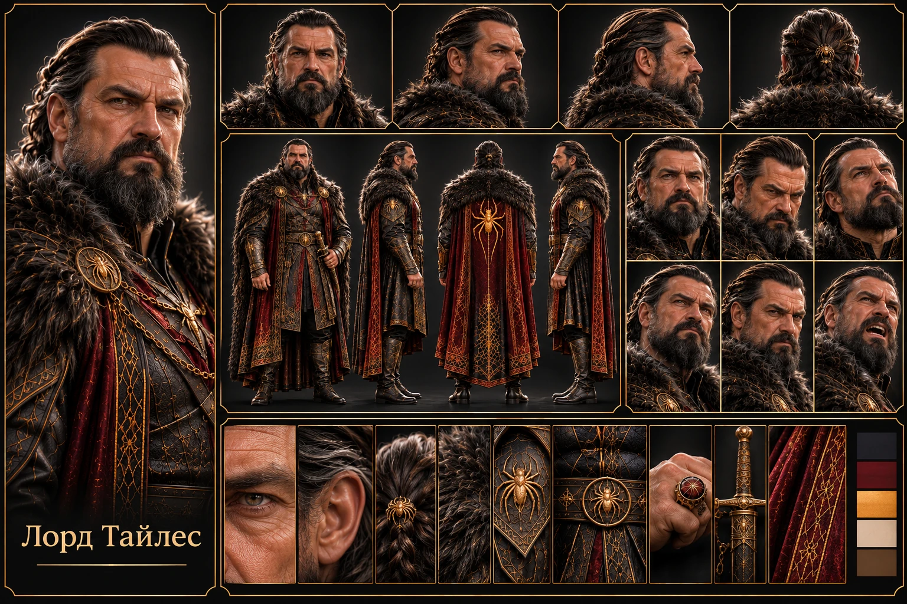

ОСНОВНА ІНФОРМАЦІЯ
Ракетні сили
Лорд Тайлес відповідає за ракетні підрозділи та великі запаси боєприпасів свого світу. Під час наступу на місто-шлях він організовує тривалий ракетний обстріл, мета якого — виснажити протиповітряну оборону, а не зруйнувати саму споруду одним ударом.
Титул: лорд
Посада: командувач ракетними силами
Підпорядкування: Верховний
Взаємодія: лорд Олаф та інші командувачі
ДЕНЬ 13 · РАДА ЛОРДІВ
Пам’ять про знищені володіння
Верховний нагадує Тайлесу, як війська нульовиків знищували його володіння, а його люди благали про милосердя. Було втрачено два чи три поселення. Тайлес не відводить погляду; у його очах помітні біль і злість, але він не заперечує сказаного.
ДЕНЬ 15 · РАКЕТНИЙ УДАР
Виснажити оборону
Тайлес керує багатогодинними запусками ракет, які проходять крізь портали й атакують місто-шлях із різних напрямків. За задумом Верховного, його завдання — змусити ППО витрачати перехоплювачі. Саму оболонку міста-шляху не можна пробити звичайним масованим ударом: вона розрахована навіть на непрямий ядерний вибух поруч із конструкцією.
Тайлес має у своєму розпорядженні великі запаси ракет, що роками зберігалися без використання.
ДЕНЬ 18 · СПРОБА ВІДНОВИТИ РАКЕТНИЙ УДАР
Обмеження порталів
Після того як вільних темних характерників стає замало, Тайлес намагається відновити ракетні запуски за допомогою тих, хто ще доступний. Боєприпаси й розрахунки залишаються на місці, але тепер головним обмеженням стає нестача характерників, здатних відкривати портали біля ракетних установок.